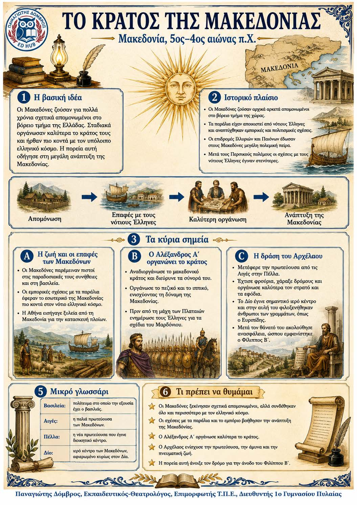

Πληροφοριογράφημα ενότητας
Το πληροφοριογράφημα αυτής της ενότητας δεν έχει ανέβει ακόμη. Οι σημειώσεις παραμένουν πλήρως διαθέσιμες.

Μακεδονία, 5ος-4ος αιώνας π.Χ.
Οι Μακεδόνες έζησαν για χρόνια στο βόρειο τμήμα της Ελλάδας και διατήρησαν τη βασιλεία. Οι επαφές με τους νότιους Έλληνες, το εμπόριο και οι επιδρομές των γειτόνων επηρέασαν την ανάπτυξή τους. Ο Αλέξανδρος Α΄ και ο Αρχέλαος οργάνωσαν καλύτερα το κράτος και άνοιξαν τον δρόμο για την άνοδο της Μακεδονίας.
